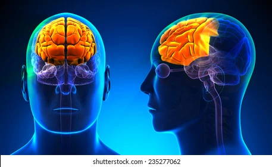

El Lóbulo Frontal

1. Ubicación y Límites
El lóbulo frontal es uno de los cuatro lóbulos principales de la corteza cerebral. Se sitúa en la parte
anterior de cada hemisferio cerebral, por delante del lóbulo parietal y por encima y por delante de los
lóbulos temporales.
Está delimitado por dos surcos principales:
- Surco central: Ubicado en la cara lateral, separa el lóbulo frontal del lóbulo parietal en la
parte posterior.
- Surco lateral (Cisura de Silvio): Separa el lóbulo frontal del lóbulo temporal en la parte
posterior e inferior.
2. Surcos y Giros
El lóbulo frontal contiene tres surcos importantes que lo dividen en cuatro giros principales:
- Surco precentral: Se sitúa por delante del surco central y se extiende diagonalmente hacia abajo
y hacia adelante. Junto con el surco central, delimita el giro precentral.
- Surco frontal superior y Surco frontal inferior: Se disponen de forma horizontal por delante del
surco precentral y dividen la región en tres giros paralelos:
- Giro frontal superior
- Giro frontal medio
- Giro frontal inferior
3. Áreas Funcionales
- Corteza motora primaria: Ubicada en el giro precentral. Controla los movimientos
voluntarios de partes específicas del cuerpo.
- Área premotora: Situada en la parte superior del giro frontal superior (delante
del giro precentral). Participa en la planificación motora.
- Campo ocular frontal: Localizado en el giro frontal medio (delante del giro
precentral). Controla los movimientos oculares sacádicos.
- Área motora del lenguaje de Broca: Situada en el giro frontal inferior (delante
del giro precentral). Contiene la representación de la cara en el homúnculo motor.
- Corteza prefrontal: Ubicada en la región anterior (incluye el polo frontal). Es
la parte más avanzada funcionalmente y responde de las funciones ejecutivas:
- Planificación y toma de decisiones
- Memoria de trabajo
- Expresión de la personalidad
- Regulación del comportamiento social
- Control de aspectos del habla y el lenguaje
|
4. Irrigación Sanguínea
Proviene de dos divisiones de la arteria carótida interna:
- Arteria cerebral anterior (menor calibre): Irriga las secciones superior e interna de la corteza.
- Arteria cerebral media (mayor calibre): Aporta sangre a las partes inferior y externa de la
corteza.